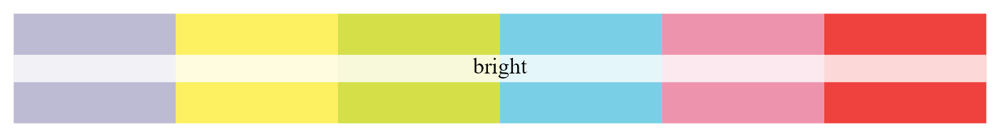
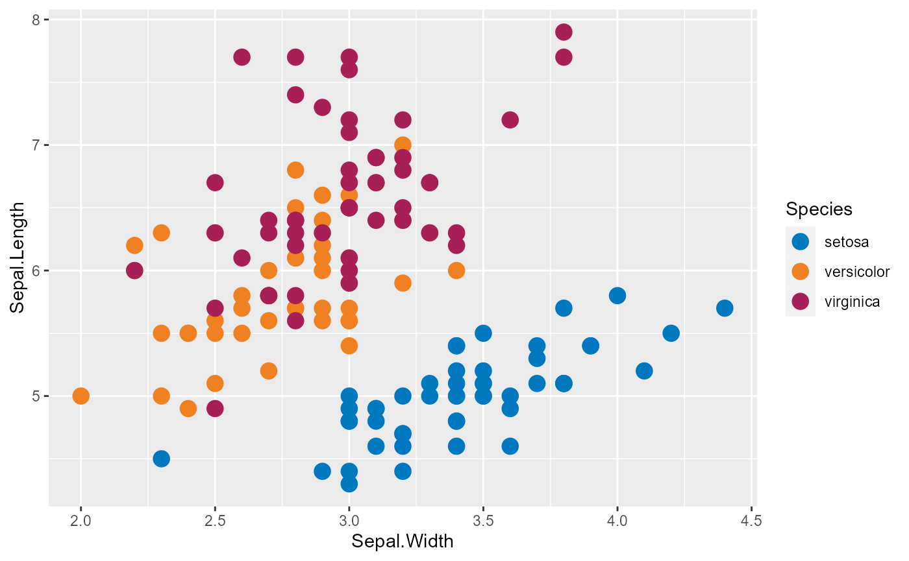

CCF Color Palette
Emily C. Zabor
Last Updated: 2023-07-20
ccf_color_palette.RmdIntroduction
This vignette gives a short example on usage of the
ccf_color_palette functionality. The goal of the
ccf_color_palette functions is to give users access to
Cleveland Clinic brand colors for use in plotting with
ggplot2.
The code behind this color palette is largely based on the code from the Wes Anderson color palettes for R: https://github.com/karthik/wesanderson and a previous brand color palette I created at Memorial Sloan Kettering Cancer Center.
The colors
Details about the CCF brand colors can be found at the OnBrand website.
On a basic level, the CCF brand colors are stored as named values. You can see a complete list:
ccf_cols()
#> ccf_blue ccf_green ccf_black tango
#> "#0078bf" "#00843d" "#4b4b45" "#f08122"
#> honey_flower maroon_flush lightning_yellow blue_haze
#> "#5c2161" "#a61f56" "#f7c612" "#bdbbd4"
#> candy_corn wattle seagull mauvelous
#> "#fdf061" "#d5e048" "#79d0e6" "#ee93ae"
#> flamingo beryl_green cinderella lola
#> "#ef413d" "#dedab7" "#fcdcda" "#e2d4d9"
#> surf_crest light_apricot botticelli silver_sand
#> "#cce4cb" "#fdd1b0" "#d3dee8" "#c6c8c8"
#> jumbo pickled_bluewood millbrook mondo
#> "#7b7d83" "#384d5f" "#51362d" "#473f29"You can access the hex color for a specific color:
ccf_cols("ccf_green")
#> [1] "#00843d"You can access the hex color for multiple colors:
ccf_cols("ccf_blue", "ccf_green")
#> [1] "#0078bf" "#00843d"Palettes
There are six color palettes available.
You can view a list of the color names and hex codes for a specific color palette:
ccf_palettes[["main"]]
#> [1] "#0078bf" "#00843d" "#4b4b45" "#f08122" "#5c2161" "#a61f56" "#f7c612"And you can also view the colors in a plot window.
main
The main color palette is based on the primary and
seconary CCF brand colors.
ccf_palette("main")bright
The bright color palette is based on the bright
supplemental CCF brand colors.
ccf_palette("bright")
neutral
The neutral color palette is based on the neutral
supplemental CCF brand colors.
ccf_palette("neutral")all
The all color palette contains all colors from main,
bright, and neutral for when a large number of colors are needed.
ccf_palette("all")blues
The blues color palette only contains two colors and is
meant to be used for continuous color scales where interpolation will be
done between the high and low color.
ccf_palette("blues")
greens
Similarly, the greens color palette only contains two
colors and is meant to be used for continuous color scales where
interpolation will be done between the high and low color.
ccf_palette("greens")
Plotting
Functionality is available to plot single or multiple colors, discrete color scales, and continuous color scales.
To use a single specific color, simply reference it by name.
ggplot(mtcars, aes(x = hp, y = mpg)) +
geom_point(size = 4, color = ccf_cols("ccf_green"))
You can do the same to use multiple specific colors using
scale_color_manual.
ggplot(iris, aes(Sepal.Width, Sepal.Length, color = Species)) +
geom_point(size = 4) +
scale_color_manual(
values = ccf_cols(c("ccf_green", "seagull", "maroon_flush")))To use the palettes, specify a palette by name as the
values argument to scale_color_manual or
scale_fill_manual.
ggplot(iris, aes(Sepal.Width, Sepal.Length, color = Species)) +
geom_point(size = 4) +
scale_color_manual(values = ccf_palette("main"))
ggplot(iris, aes(Sepal.Width, Sepal.Length, color = Species)) +
geom_point(size = 4) +
scale_color_manual(values = ccf_palette("bright"))
You can also pick and choose which colors you want by position in the palette.
ggplot(iris, aes(Sepal.Width, Sepal.Length, color = Species)) +
geom_point(size = 4) +
scale_color_manual(values = ccf_palette("main")[c(1, 4, 6)])
The scale_color_gradientn function can be used to add
colors on a continuous scale, by adding the option
type = "continuous" to ccf_palette().
Interpolation between colors in the palette will be done to create a
continuous scale, and this is intended for use with the
blues and greens palettes.
ggplot(iris, aes(Sepal.Width, Sepal.Length, color = Petal.Length)) +
geom_point(size = 4) +
scale_color_gradientn(colors = ccf_palette("greens", type = "continuous"))